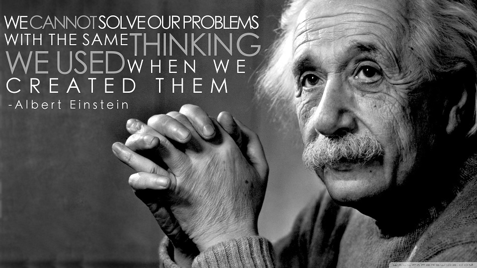

| „ |
Личният пример не е основното средство да се влияе на другите, той е единственото средство. |
“ |
| „ | Правете всичко максимално опростено, но не повече. | “ |
| „ |
Важните проблеми, пред които сме изправени, не могат да бъдат решени на същото ниво на мислене, на което сме ги създали. |
“ |
| „ |
Мерилото за интелекта е умението да се променяш. | “ |
| „ |
Има два начина да изживееш живота си. Единият е като мислиш, че не съществуват чудеса. Другият е като мислиш, че всяко нещо е чудо. | “ |
| „ |
Очевидна е хармонията в космоса, която аз, с моя ограничен човешки ум, успявам да схвана, но въпреки това, все още има хора, които казват, че Всевишният не съществува. А това, което наистина ме вбесява, е фактът, че тези хора твърдят, че аз поддържам техните възгледи. | “ |
|
Алберт Айнщайн |
||
|  | ||